| 代码组及其含义 “模态代码” 和 “一般” 代码 “形式代码” 的功能在它被执行后会继续维持，而 “一般代码” 仅仅在收到该命令时起作用。定义移动的代码通常是“模态代码”，像直线、圆弧和循环代码。反之，像原点返回代码就叫“一般代码”。 每一个代码都归属其各自的代码组。在“模态代码”里，当前的代码会被加载的同组代码替换。 |
||||||||||||||||||||||||||||||||||||||||||||||||||||||||||||||||||||||||||||||||||||||||||||||||||||||||||||||||||||||||||||||||||||||||||||||||||
|
||||||||||||||||||||||||||||||||||||||||||||||||||||||||||||||||||||||||||||||||||||||||||||||||||||||||||||||||||||||||||||||||||||||||||||||||||
| 注意 ： 实际运行中G指令之后如无数字则视为“G00”。 注1：有“＊”记号表示为当电开或初期化再设定执行时各组内被选择的G码。 注2：有“※”记号表示当电源开或初期化再设定执行时参数选择可能的G码当作初期状态的显示，介公制/英制变换只能在电源投入时选择。 注3：指定2个以上同一组的G指令时，以最后一个G指令为有效。 |
| 代码解释 |
| G00 快速进给定位 |
1. 格式 G00 X（U）_ Z（W）_ 这个命令把刀具从当前位置移动到命令指定的位置 (在绝对坐标方式下)， 或者移动到某个距离处 (在增量坐标方式下)。  2. 机能及目的 此指令伴随坐标名称，以现在位置为起始点，坐标名称所表示的为终点坐标，以直线或非直线之路径作位置定位。 3. 详细说明 4. 举例
|
| G01 直线补间 |
1. 格式 G01 X(U)_ Z(W)_ F_ ; 直线插补以直线方式和命令给定的移动速率从当前位置移动到命令位置。  X, Z: 要求移动到的位置的绝对坐标值。 U,W: 要求移动到的位置的增量坐标值。 2.机能及目的 3.详细说明 4. 举例 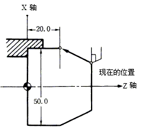 G01 X50.0 Z20.0 F300；
|
| G02/G03 圆弧补间 (G02/G03) |
1. 格式 G02(G03) X(U)__Z(W)__I__K__F__ ; G02(G03) X(U)__Z(W)__R__F__ ; G02 �C 顺时钟 (CW) 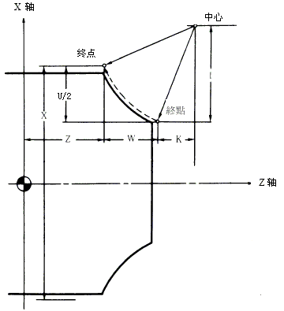 2.详细说明
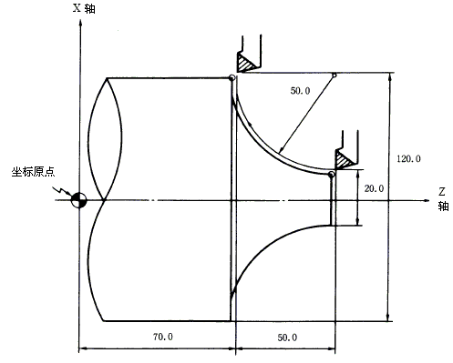 G2 X120.0 Z70.0 I50.0 F200； 绝对值指令 G2 U100.0 W-50.0 I50.0 F200； 增量值指令 1.格式
1.机能及目的
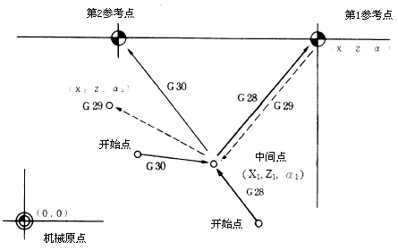 2.格式
|


| G30 第2、第3、第4参考点（原点 ）复归 (G30) |
1.机能及目的 G30 P2 （P3, P4） 指令的指定，第2、第3 或第4 参考点（原点）位置的复归可以执行。
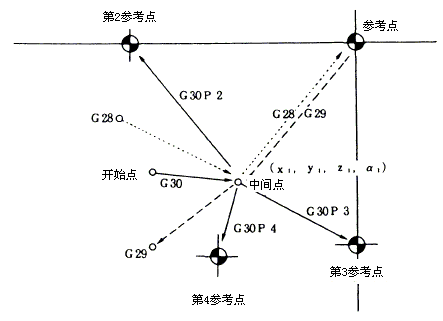 2.格式 G30 P2 （P3, P4） X＿Z_; 3.详细说明 |
| G33 螺纹切削 (G33) |
等螺距的螺纹切削 1. 概要 G33 指令为以主轴回转和工具进给同步执行等螺距的直线螺切削加工、斜螺纹切削加工和连续螺纹切削加工。
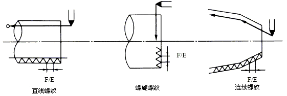 2.格式 G33 Z（W）＿ X（U）＿ F＿Q＿ ；
（普通螺纹切削指令） Z, W, X, U： 螺纹的终点位址及坐标值 3. 举例 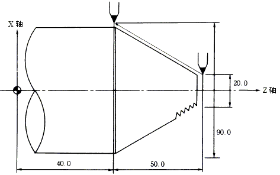 G33 X90.0 Z40.0 E12.34567 ；
绝对值指令 英制螺纹切削 2.格式
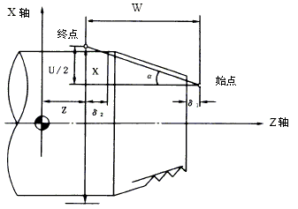 3.详细说明
|
| G40/G41/G42/G46 刀径补正 (G40/G41/G42/G46) |
1. 概要 刀具尖端一般是圆弧形的，而程式执行时，都在刀具的前端假想刀尖点。所以在斜度或圆弧切削时，程式所切削的形状和真正切削形状之间，由于刀尖圆弧形而产生误差。这刀尖半径补正机能是依照刀径设定而能自动计算补正此误差。 依照指令码可以选择补正方向为固定或自动判别。
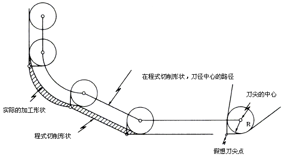 2. 机能和指令格式 |
|||||||||||||||
|
|||||||||||||||
补偿的原则取决于刀尖圆弧中心的动向，它总是与切削表面法向里的半径矢量不重合。因此，补偿的基准点是刀尖中心。通常，刀具长度和刀尖半径的补偿是按一个假想的刀刃为基准，因此为测量带来一些困难。 把这个原则用于刀具补偿，应当分别以 X 和 Z 的基准点来测量刀具长度刀尖半径 R，以及用于假想刀尖半径补偿所需的刀尖形式数 (0-9)。 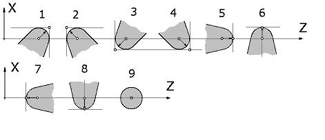 这些内容应当事前输入刀具偏置文件。
|
| G54-G59 工件坐标系 设定和工件坐标系补正(G54-G59) |
1. 机能及目的 1）工件坐标系是以工件参考点为原点促进所做加工程式。 2）此指令为工件坐标系位置移动指令。工件坐标系依程式的实际使用有6种。（G54~G59） 3）此指令选取现在工件坐标系，使目前刀具的坐标值与指定的坐标值相符合。（目前刀具位置包括刀具径，刀具长及刀具位置的补正量。） 4）此指令为刀具目前位置与指令坐标，来设定假想的机械坐标系统定。（刀具目前位置包括刀径、刀具长及刀具补正量。）（G54, G92） 2. 格式 3.详细说明
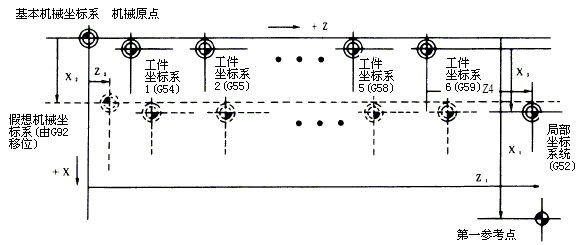 |
| G 70 精车削加工循环(G70) |
1. 格式 G70 A＿P＿ Q＿ A：加工路径的程式号码（如在执行中的程式，则可省略） P：加工路径的开始顺序号码（如从程式的前面开始，则可省略） Q：加工路径的终了顺序号码（如在程式最后，则可省略）但是Q指定的号码，在M99指令后，则以M99为主。 2. 功能
|
| G 71 外园粗车固定循环(G71) |
1. 格式 G17 Ud Re； G17 Aa Pp Qq Uu Ww Ff Ss Tt； Tt ： 刀具指令 Ud ：切削量d（没有P，Q指令时的切削量）（待续有效） Re ：退刀量e（持续有效） Aa ：加工路径的程式号码（如在执行中的程式，则可省略） Pp ：加工路径的开始顺序号码（如从程式的前头开始，则可省略）。 Qq ：加工路径的终了顺序号码（如在程式最后，则可省略），但是Q指定的号码，在M99指令之后，则以M99为主。 Uu ：X轴方向的预留量（直径或半径指定） Ww：Z轴方向的预留量 Ff ：切削速度 Ss ：主轴速度 路径程式中的F,S,T 指令无效。F,S,T 是依粗车削复合循环的指令来指定或先前所指定。 2. 功能
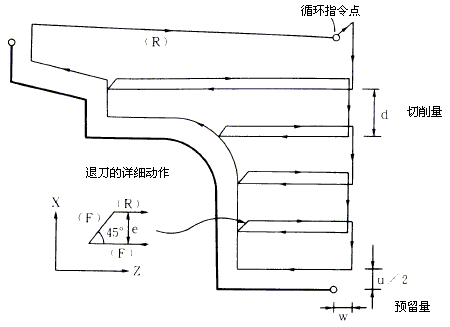 |
| G 72 端面粗车削复合循环(G72) |
1. 格式 G72 Wd Re ； G72 Aa Pp Qq Uu Ww Ff Ss Tt； Tt ： 刀具指令 Ud ：切削量d（没有P，Q指令时的切削量）（待续有效） Re ：退刀量e（持续有效） Aa ：加工路径的程式号码（如在执行中的程式，则可省略） Pp ：加工路径的开始顺序号码（如从程式的前头开始，则可省略）。 Qq ：加工路径的终了顺序号码（如在程式最后，则可省略），但是Q指定的号码，在M99指令之后，则以M99为主。 Uu ：X轴方向的预留量（直径或半径指定） Ww：Z轴方向的预留量 Ff ：切削速度 Ss ：主轴速度 路径程式中的F,S,T 指令无效。F,S,T 是依粗车削复合循环的指令来指定或先前所指定。 2. 功能 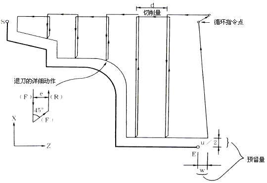 |
| G 73 粗加工循环切削量(G73) |
1. 格式 G73 Ui Wk Rd ； G73 Aa Pp Qq Ww Ff Ss Tt； Ui ：X轴方向切削预留量 Wk:Z轴方向切削预留量 Rd ：分割次数 Aa ：加工路径的程式号码（如在执行中的程式，则可省略） Pp ：加工路径的开始顺序号码（如从程式的前头开始，则可省略）。 Qq ：加工路径的终了顺序号码（如在程式最后，则可省略），但是Q指定的号码，在M99指令之后，则以M99为主。 Uu：X轴方向的预留量 Ww：Z轴方向的预留量 Ff ：切削速度 Ss ：主轴速度 Tt ： 刀具选取 2. 功能 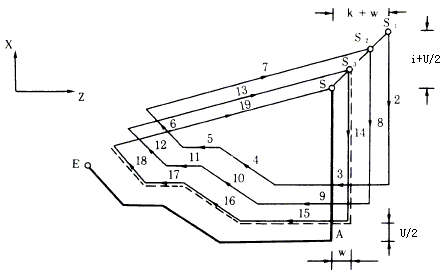 |
| G74 端面车削循环(G74) |
1. 格式 G74 Re； G74 X／（U）x Z／（W）z Pi Qk Rd Ff； Re ：退回量e（�]有X／U，P 指令有效）（持续有效）。 X／Ux ：B点X坐标（绝对值/增量值）。 Z／Wz ：B点Z坐标（绝对值/增量值）。 Pi ：刀具的偏移量（半径指定，增量值，符号不要） Qk ：切削量（半径指定，增量值，符号不要） Rd ：切削底端刀具的逃离量：没有符号时，第一次切削底端刀具便逃离；而负号指定时，第一次切削底端刀具不作逃离，从以后切削底端才作逃离。 Ff ：进给速度 2. 功能 如下图所示 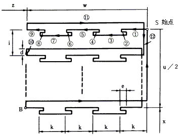 |
| G 75 外经/内径啄式钻孔循环(G75) |
1. 格式 G75 Re； G75 X／（U）x Z／（w）z Pi Qk Rd Ff； Re ：退回量e（�]有X／U，P 指令有效）（持续有效）。 X／Ux ：B点X坐标（绝对值/增量值）。 Z／Wz ：B点Z坐标（绝对值/增量值）。 Pi ：刀具的偏移量（半径指定，增量值，符号不要） Qk ：切削量（半径指定，增量值，符号不要） Rd ：切削底端刀具的逃离量：没有符号时，第一次切削底端刀具便逃离；而负号指定时，第一次切削底端刀具不作逃离，从以后切削底端才作逃离。 Ff ：进给速度 2. 功能
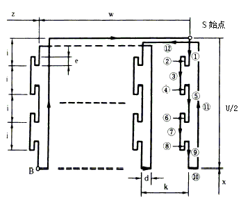 |
| G 76 螺纹切削复合循环(G76) |
1. 格式 G76 Pmra Rd； G76 X／U Z／W Ri Pk Qd Fλ； m：切削次数00~99（持续有效） r：倒角量00~99（持续有效） 用“λ”表示螺纹螺距，则倒角度的范围为0.0λ~9.9λ。小数点省略以2位整数表示。 a：刀尖角度（螺纹角度）00~99（持续有效）0°~90°的角度以1°为单位指定。“m”，“r”和“a”可用位址P 指定。 d：预留量（持续有效） X／U ：螺纹部分的X轴终点坐标，螺纹部分的X轴坐标，可用绝对值或增量值来表示。 Z／W ：螺纹部分的Z轴终点坐标，螺纹部分的Z轴坐标，可用绝对值或增量值来表示。 i：螺纹的斜度（半径值），当i=0时为直线螺纹。 k：螺纹高度，螺牙的高度用正的半径值表示。 Δd ：切削量，第一次的切削量是正的半径值指令。 λ ：螺纹螺距。 2. 举例 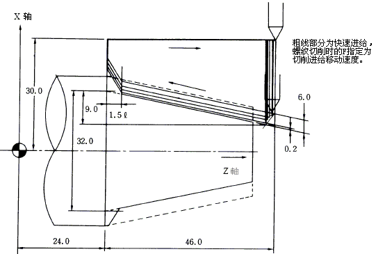 G76 P021560 R0.2； 1.机能和目的
2.格式 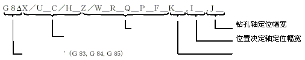 直线孔
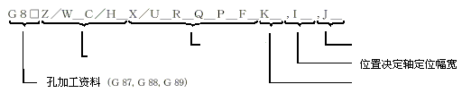
1.格式
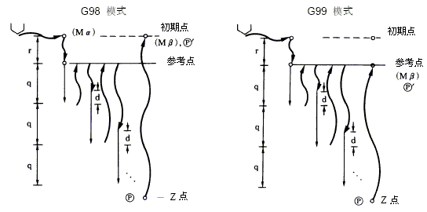 �]有Q 指令时（钻孔） 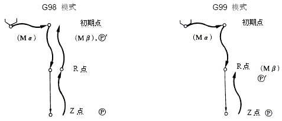 1.格式
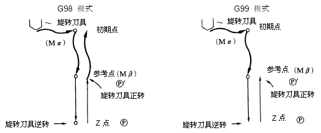 G84 （G89）X（z）_C Z（x）_R_P_F_K_I_ ,J_M_；
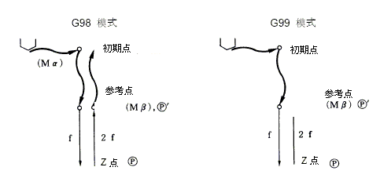 |
| G92 坐标系的设定(G92) |
1. 格式 G92 X＿ Z＿ ； 2. 机能及目的 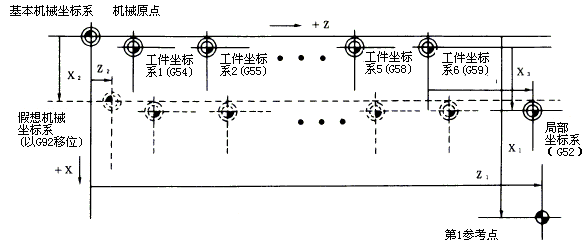 3.详细说明 1） G92 指令以基本坐标系作位移当作假想机械坐标系，这时工件坐标系1~6 也同时作位移。 2） G92 和S 或Q 指定时，是主轴夹持速度的设定。 |